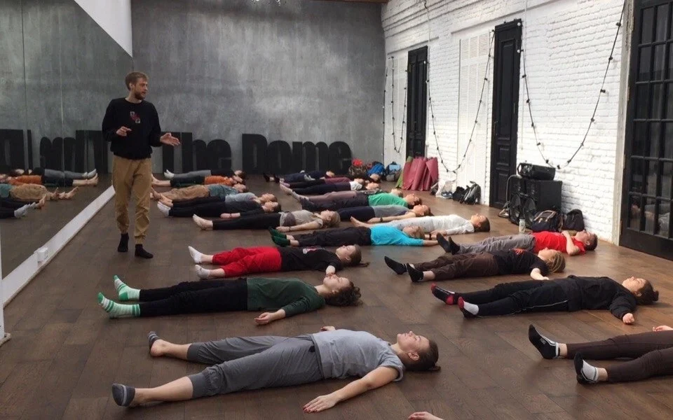

Архив опыта
Истории учеников
У каждого человека своё тихое приключение.
Здесь собраны впечатления, наблюдения и открытия людей, с которыми мне довелось заниматься соматикой.

Опыт соматики.
Что я чувствовала во время того, как лежала и посещала вниманием различные части своего тела.
Медленно перетекать вниманием из одного пальца ноги в другой очень приятно. Смотреть на тело изнутри – ощущения практически тактильные, как будто я научилась чувствовать внутренней стороной кожи. Чувствовать, что у меня есть кости внутри! Каким я представляю свое тело и какое оно по внутренним ощущениям? На фоне мощного расслабления аналитические способности моего мозга сдавались и я уплывала в туман. Мне понравилось сравнивать ощущения в ногах – та, что я только что подробно изучила словно «звенела», а другая оставалась в абсолютном спокойствии по сравнению с проработанной.
Соматические движения. Хорошо, когда есть время почувствовать движение полностью. С дыханием, с сокращениями одних мышц и с растяжением других. Наблюдать, как мышца по привычке не хочет расслабиться, хотя нет причин напрягаться. Понять, что это все проделки мозга. Расслабиться.
Я знаю, где мои проблемные зоны. Где блоки, которые не дают энергии спокойно течь по всему телу. Но теперь я их ощутила физически и тело поняло, что с ними не надо бороться, а можно договориться. Не так быстро. Соматика – это вообще не про скорость.
В какой-то момент тело начало жаловаться. Сразу все, как ребенок или бабушка. Пришлось успокаивать, уделять внимание.
Уже в тысячный раз убеждаюсь, что все телесные и духовные практики об одном. Чем больше я узнаю, тем больше новые знания дополняют уже имеющиеся, и, что самое интересное, среди них нет противоречий.
Спасибо Косте за чудесный опыт и новые знания!
Привет всем))) я пришла на занятия очень скептически настроена, сама по природе такой человек! Но боль в пояснице меня заставляет испробовать все : ) иногда даже самое неожиданное. По правде говоря для меня, человека совершенно не усидчивого, занятия прошли тяжело, то дышать было сложно, то надоело лежать)) Но всё же эффект чувствуется, что-то заработало! Какая-то легкость в теле появилась! Буду думать, возможно стоит продолжить это дело
Костя и Лена, друзья, спасибо большое за новый опыт. Мне очень понравилось. Причем обе части - и про соматику, и про танцы. Соматика - больше про исследование себя изнутри, а танец - про возможность расслабиться и проявить себя наружу.
Соматика мне понравилась таким вот - ненапрягающим подходом про то, что можно сделать меньше да лучше, и что вообще не надо стараться) а больше быть внимательным. Очень много нового можно заметить таким образом - если никуда не бежишь.
Также заинтересовала идея выработки свободной походки - хотелось бы попробовать.А contemporary dance оказался именно тем танцем, к которому я интуитивно тянулась, но никогда не занималась. Очень захотелось продолжить и нарастить как технику, так и опыт импровизации.
Рада была со всеми познакомиться и провести вместе эти два дня!
После урока на дыхание (на следующее утро) чувствую такие мышцы, о существовании которых и не подозревала)))
Надо чаще обращать на себя внимание) И вообще - взять это в привычку)))
Я был на классе из 4 уроков. Долго не мог собраться отзывом непонятно почему. Но потом понял. Я ждал невероятного эффекта - типа, буду летать и чувствовать себя таким суперменом с абсолютно здоровой спиной :)) Такого эффекта не случилось. Но. Вчера наконец понял, что за изменения произошли. Ушёл дискомфорт в пояснице. Настолько естественно и натурально, что я и забыл, что до класса довольно длительное время чувствовал боль в пояснице :)) это очень круто, я считаю.
Теперь по самим занятиям. Первые два урока пролетели, даже не заметил. Костя навел на меня некий приятный транс своим размеренным голосом. Успел даже поспать и похрапеть во время второго, позабавив остальных участниц, да и себя самого потом :))) Кстати, на классе в субботу из примерно 17 участников из мужчин был только я. Мужчины, не бойтесь соматики Ханны, записывайтесь к Косте.
Вторые два урока прошли более затянуто, видимо я пока не готов к таким длительным сессиям (6-7 часов вроде получилась общая длительность).
Из теории понравились факты о различных типах мышечных напряжений (испуг, действие, боль).
Добавил бы побольше пледов на случай прохладной погоды за окном.В общем и целом понял, что соматика Ханны под руководством Кости - работает, причём каким-то волшебным образом :)) Костя, спасибо тебе :)
Прямо после занятия оставлять комментарии намного проще. Еще свежи впечатления и ощущения. Девизом этих занятий было: "почувствуй свое тело, освободись от сковывающих рефлексов"... И я не думала, что настолько все взаимодействует, взаимосвязанно и как легко и просто выполнить обычные действия, не совершая лишних движений, не тянутся шей и не мучать и без того загружённый организм)))) Оказывается у меня есть "маленький рюкзачок напряжения " и ура(!) его можно снять и расслабится! А также можно научится дышать полной грудью, а не только писать об этом.. И масса новых впечатлений остается после каждого занятия, хотя это все тоже тело, все та же я, только необычно все так-то!
И еще эти новые ощущения стоят того чтобы придти на занятия и в дождь и в жару и вообще в любом настроении!
Очень понравился мастер-класс! Изменения настолько глубокие и тектонические, что сложно подобрать верные слова. Однозначно - улучшение самочувствия и настроения.
Понравилась комбинация легкости и полной серьезности :)
Must try! Спасибо!
Я не знаю, как это получилось, я просто старалась быть внимательной и следовала инструкциям. А они такие простые, делайте в зоне комфорта, не старайтесь, делайте вообще практически мысленно, наполнитесь воздухом, почувствуйте, что пространство вокруг вас живое, двигайтесь как сквозь воду или как сквозь мед… оставляйте после себя светящийся след…рисуйте локтями… следуйте за левой пяткой…получайте удовольствие...
Два дня погружения в себя и выхода в пространство. Как вдох и выдох. Спасибо за уникальную возможность прожить эти два процесса последовательно, попеременно и восприять удвоенное благо сочетания соматики и танца!
И, как последствие, у меня случились довольно редкие, согласитесь, переживания: полноты бытия, радости причастности к процессу жизни, доверия к себе и миру, благодарности к своему телу и даже вплетенности ручейка своей судьбы в неисчислимый океан судеб мироздания.
Ищите и обрящете! Хочется сказать всем, исследуйте свое тело, погружайтесь в соматику, доверьтесь танцу – быть счастливым это так просто!!!!
Костя, Лена СПАСИБО ОГРОМНОЕ за ресурс!!! Он всегда будет со мной!
PS: Я не знаю, как они это сделали… просто люди на своем месте в этой жизни…любят свое дело, живут им…делятся той радостью, которую имеют сами!!
"Счастливая спина".....она и правда стала счастливее...спасибо))) ...правда не все получалось у меня,но то что получалось было приятно и ощутимо. Это было вчера,а сегодня периодически ощущая напряженность в теле,думаю а зачем...и расслабляюсь...так что эффект для меня очевиден,т.к. раньше даже если и ловила себя на напряжении не всегда удавалась изменить это состояние сразу. […]
Очень любопытно, что мне, наоборот, интереснее всего оказалась вступительная теория. В ней я нашла ответы на вопросы, с которыми приходила, хоть и не озвучивала в начале. Если бы у меня было всего полчаса, я в этот раз бы провела их за прослушиванием теории :) Но у меня была цель — понять логику практики, поймать ее отличие от других, услышать подход практикующего специалиста.
Может, если бы начало было пораньше, то все бы остались до конца. Так как во встрече было указано "до 20:00", построились последующие планы :)
Начну!
1. Минусы.
Очень затянутая теоретическая часть. Мне было интересно узнать, но не в таком объеме. Хватило бы минут 15 общей информации о связи нервной системы с мышцами, о карте тела и сознательно-бессознательном.Я расстроилась, что часть людей не смогла остаться именно на практику, точнее последнюю ее часть о дыхании.2. Плюсы. Понравился способ донесения информации именно во время практики: слова-ключи, которые помогали мне легко проникнуть в глубину тела - почувствовать, услышать, понаблюдать. На мой взгляд именно слова-ключи помогли мне глубоко войти в контакт с телом и услышать его.
Очень понравилась часть на дыхание. действительно чувствуешь прямо массаж внутреннего пространства тела и дополнительные объемы для дыхания.3. Изменения заметила на моих занятиях растяжкой разница до и после класса существенная! Поясница и спина в целом очень легко поддались всем упражнениям, а так же изменилось ощущение стоп в практике.
4. В следующий раз мне бы хотелось четкого тайминга, минимум теории и много практики.
Впечатления супернеобычные, как заново учиться дышать. И еще учиться себя знать и любить.
Месяц занятий пролетел очень быстро. Изменения большие. Начнём по-порядку:
После первого занятия у меня проснулась жажда деятельности. Я бы даже сказал - рефлекс к действиям. Я перестал откладывать большинство дел и максимально возможное количество дел делал сразу. Как дома, так и на работе.
Я научился расслаблять те мышцы, которые у меня расслабить не получалось. В особенности - низ спины.
Очень понравилось занятие, посвящённое дыханию.
А после занятия про шею и плечи - я почувствовал, как у меня в буквальном смысле упал камень с плеч. Но самый главный эффект этого занятия я заметил после - у меня перестала хрустеть шея. Вообще. Как бы я ей не двигал.
Ещё очень понравилось занятие, посвящённое походке. Я осознал, как походка строится физиологически. Действительно получается легко, непринуждённо, приятно и гармонично.
Некоторые упражнения курса действительно доставляют удовольствие, наслаждение. Начинаешь лучше чувствовать своё тело, его движения, вплоть до мельчайших, его, не побоюсь этого слова, дыхание. Устанавливается контакт мозга с телом. Тело осознаётся как что-то цветное, яркое, радостное.
Жалею, что пропустил три занятия.
Как таковых минусов для себя я не обнаружила. Жаль, что не было урока на ноги и таз и жаль, что плечи и шею мы прошли галопом. Немного устала от расслабления на полу - с непривычки тяжело лежать днем несколько часов подряд - начинают затекать ноги и шея.
К плюсам можно отнести очень мягкий и тёплый голос Кости, что помогало расслабиться. Очень понравилось дыхание. Грудь чувствовалась как воздушный шар на протяжении двух дней.
Спасибо за такой ценный опыт Косте и Маше за организацию!
Очень сильные для меня ощущения.
Я человек витающий, мне сложно быть в теле, вылетаю из него.Такое чувство, будто я обычно управляю им издалека, какими-то железными китайскими палочками - хватая, зажимаяя посильнее и волоча куда надо.
А иногда... вселяюсь обратно и двигаю им сама, тогда можно отпустить хватку.
Поэтому почти все занятие слёзы капали - от того, что тело сильно жмёт мне, непривычно, неудобно, любая попытка как следует ощутить ноги даёт сильный зажим в груди...
Трудно.
Но при этом - кайф! Как же мне этого не хватало! Какое облегчение - отпустить все зажимы и просто двигаться самой!
Это получилось за время занятия.Похоже, для меня этот метод возвращения тела - самый удобный, действенный и быстрый! Обязательно буду заниматься ещё.
Была на групповом занятии, посвященном тазобедренному суставу.
В сухом остатке удивление и радость от того, на сколько быстро, просто и глубоко можно установить контакт с собой изнутри, получить ощущение целостности.
Считаю, что соматика – очень перспективное направление. Благодарю Константина и свою подругу за возможность случиться этому опыту
Все откладывала написать. Так вот. По первому занятию многое было сказано, но стоит повториться и здесь. Как часто мы прислушиваемся к своему телу? Мы настолько привыкли к дискомфорту и напряжениям в наших мышцах, что уже не замечаем и не придаем этому никакого значения. А все движения производим "на автомате". В течение первого занятия мы расслабляли и восстанавливали память мышц-разгибателей спины. Звучит довольно-таки не понятно на первый взгляд. Однако после выполнения незамысловатых, простых движений чувствуешь, насколько свободней и легче стало спине. Все дело в медленном исполнении, спокойном глубоком дыхании, обращению к ощущениям, к тому, какие мышцы работают в тот или иной момент. До этого и не задумываешься, что в любом, даже малейшем движении, принимает участие большое число мышц, особенно центральных. Ты вспоминаешь суть движений и работаешь всем телом, а не одной его частью.
Не знаю, как для вас, а для меня соматика - стала открытием. Это будто тайный разговор с телом, ты слышишь его и удивляешься тому, что узнаешь.
Собираясь на занятие к Косте, я уже была знакома с соматикой, знала о ее пользе, как проходит занятие..в общем была уже тепленьким клиентом. особых чудес не ждала, пришла заниматься спиной! но было в занятии новое для меня - Костя очень здорово объясняет теорию. и она оказалась очень важна. помогает расставлять правильные акценты. было очень полезно узнать механизм работы метода, узнать о создателях метода..
само занятие мне тоже понравилось. Костя очень здорово поддерживает в этом процессе. он вдохновляет на работу, а не заставляет. дает много свободы! это очень классно) купила у Кости индивидуальный курс, буду вдохновляться дальше! Спасибо!!!
Была на занятии, посвященном Дыханию в центре Спектрум на Калужской. Совершенно неожиданно в результате занятия расслабились голосовые связки (голос стал ровнее и ниже, эффект был на несколько часов весьма ощутимый), поясница расслабилась (уменьшилось расстояние до пола в положении лежа на спине ), расслабились плечи. Появилось состояние легкости в теле, четче ощущается тело и его контуры. Костя, спасибо за занятие и знания, которыми ты делишься. Это приятный и безопасный способ позаботиться о себе и своем теле. И расслабиться без напряжения. Что очень важно для меня.
Космос внутри действительно ощущается . Как будто манитное притяжение и сообщение между всеми частями тела . Все стало работать слажено и расскованно . Каждая мышца спешит мне что -то рассказать , а их как звезд на небе . Ощущение дыхания всем телом и легкость полета . Пооолный космос !Огромная благодарность Константину за путешествие по неизведанным глубинам вселенной нашего тела .
Мои ощущения:
Благодарность за целый день отдыха в работе со своим телом. Для меня это было чудесно. Я почувствовала такой заряд энергии!!!
В последнее время особенно мне удается заниматься управлением своим вниманием (медитативные техники, взгляд на свое тело изнутри). И этот семинар стал неотъемлемой частью для нового изучения себя.
На счет немного затянутой теории - с Мари соглашусь. Мне показалось, что можно было более скомпанованно донести информацию. Как будто Костин ум был занят чем-то еще, помимо донесения теоретической части... Мне так показалось. Я прошу мягко воспринимать это, не как критику, лишь как мои ощущения, и возможно, как направляющие.
Еще раз благодарю за курс. Хотелось бы пройти полный курс со всеми пропущенными уроками.)
А у меня такие впечатления... как у того христоматийного жирафа. До меня дошло только вечером в кровати, для чего все это было. Для чего тянулись, валялись и двигались. Такое интересное ощущение легкости в теле, которого достаточно непросто добиться упражнениями с физической нагрузкой. Как и обещал Костя, интенсив оказался по воздействию гораздо более мощным, чем отдельные уроки.
Я очень рада, что выходные прошли именно так. Большое спасибо ведущим, получилось душевно и познавательно.
Костя!Спасибо тебе огромное! научил чувствовать тело, каждую конечность, мышцы, ощущать движения полностью! походка...все время теперь о ней думаю!)))первый шаг к обдуманности каждого действия сделан! Еще раз спасибо!ты прекрасный учитель и очень солнечный человек!
[…] После занятия казалось, что я возвращаюсь в свою обыденную жизнь из долгого космического путешествия, а потом, на четвертый день после этого 7-часового погружения в упражнения, я осознала, что у меня изменилось ощущение моих внутренних измерений пространства и времени. Они стали бесконечными. Это прекрасное переживание, я наслаждаюсь им.
К тому же, ослабла блокировка творческого процесса. Я уже давно мечтала сшить себе чехол для планшета, и лежало дело в дальнем ящике. И вот, вдохновенно и стремительно было извлечено оттуда и с удовольствием сшито…. И трудно было остановиться…тут же начала шить юбку (а это тоже старый процесс, ждал своего часа НЕСКОЛЬКО ЛЕТ). Ну, и чтобы совершенно быть откровенной, я еще почти отреставрировала одну любимую, безумно удобную сумочку (эту реставрацию она тоже ждала годами) -)) Появилась энергия для закрытия гештальтов. Прекрасно! Однозначно, благодаря соматике Ханны.
Спасибо, Костя, что можно отправиться с вами в это путешествие, заняться собой, уйти в глубину и вернуться обновленным с лучшим осознанием собственной жизни и себя в окружающем жизненном процессе.
Костя!! Спасибо огромное, ты делаешь такой положительный вклад! Я на занятии по соматике стала воспринимать себя по-новому, да и вообще возникло много позитивных и интересных мыслей! Стала по-другому воспринимать своё тело, даже, можно сказать, заметила какие-то участки. Например, после занятия первой мыслью было: «Привет, спина». А вообще, все прошло очень позитивно, и люди собрались позитивные, спасибо всем девочкам, было приятно заниматься хорошими вещами в хорошем месте и в замечательной компании.
Была на занятии, по пояснице. Ощущение удивительные. Глубокое расслабление во время занятия и очень хорошее, легкое состояние после него. К тому же все тело как будто бы "прогрелось" и расслабление затронуло не только поясницу - кажется, у меня даже мое вечно зажатое горло немного расслабилось. Полностью прошла усталость после рабочего дня, и сейчас, на следующий день, тело ощущается легким и свежим, да и общее настроение - тоже. Большое спасибо Косте за занятие, буду ходить еще.
Медленная работа с собой и своими ощущениями открывает какие-то новые перспективы сознания тела и его границ. Учишься снова управлять своими мышцами, зависшими в нервном напряжении от бесконечного бега с препятствиями во взрослой жизни. Вообще, соматика возвращает тебя в детство, в момент знакомства с собой. И это дорогого стоит =)
Костя, ты помогаешь понять нам, какие мы самостоятельные. Какие мы сильные. Какие мы волшебники. Спасибо!
Совершенно не нужно прикладывать массу усилий, чтобы начать ощущать работу мышц, которые находятся в спячке. На следующий день после занятия, которое прошло полностью в лежачем положении и в состоянии отдыха, спина ощущалась поработавшей, причем чувствуются мышцы в более глубоких слоях, в неожиданных местах. Позвоночник, хоть на время разгружен и свободен. Верю, что при постоянных занятиях эффект будет длительным.
Не первый раз прохожу с Костей занятия по Соматике. Мне сильно откликается этот метод работы с телом. Считаю, что овладеть этой техникой должен каждый. Потому что это как волшебная палочка,которая всегда рядом с тобой. Минимум затрат (не нужны массажисты, особенное специальное помещение и условия) и максимум эффекта. И именно на этом МК я наконец-то до конца прочувствовала свой центр тяжести. И как легко без лишних перенапряжений привести в действие мышцы спины. Для меня это большой результат и совершенно новые самоощущения.
очень интересно и познавательно, и великолепная динамика. дни семинара пролетели - и в то же время были наполненны. множество ресурсных моментов. гармоничная и тонкая работа с телом и своей жизнью, внешней и внутренней. Спасибо!!!
Удивительный был день! Он прошел под знаком соматики и Кости)) Упражнения настолько продуманные и эффективные, что напряжение ушло очень быстро. После групповой практики мы с Константином позанимались индивидуально. Всем советую! Делая упражнения, я поняла, что я от перенапряжения за последнее время практически перестала дышать. В общем, я надышалась, расслабилась и с новыми силами – в жизнь)) Благодарю от всего сердца!
я сегодня первый раз за всю сознательную жизнь дышала! полностью и глубоко. оО
спасибо тебе, Костя что познакомил с соматикой.
это волшебно:)
Костя!Добрый вечер!Вчера была у тебя на семинаре.Хочу выразить огромную благодарность за то,что ты делаешь.Сегодня я подинаю первые плоды вчерашней работы,сегодня меня абсолютно не беспокоит спина,хотя день был очень активный и в обычной ситуации я бы лежала сейчас в лежку,а я еще бодра и весела.Еще раз огромное спасибо,делай обязательно свое дело,оно помогает людям,я и,уверена,многие тому подтверждение.Жду инф по остальным урокам,
Костя огромное спасибо за встречу !!! Не могла себе даже представить себе такую СОМАТИКУ . И все благодаря Вам !!! Это было так интересно и увлекательно и многомерно ))) И книга только теперь пошла , а то казалась сложной и нудной . Ознакомилась с 1 инд.уроком из курса , буду покупать полный курс .
Спасибо , ждем Вас снова ! ! !
Посещала занятие по пояснице.
Последнее время - самая проблемная зона, которую если "прихватывает", то надолго и расслабить самостоятельно становится проблематично.
Благодарю Вселенную за столь замечательный подарок - ровно в то время, как меня в очередной раз после определенных нагрузок на спину начало "пополамить", мне прислали приглашение на занятие по соматике, посвящённое именно ей, родимой.
После первой половины занятия я обнаружила, что могу шевелиться без проблем. Я встала, прошлась, погнулась в разные стороны. Поняла, что боль утихла, оуф, какой ж это счастье!
Так что с уверенностью могу сказать, что это не просто "придти, поваляться и послушать своё тело", а отличный РАБОТАЮЩИЙ метод расслабления мышц. И теперь ещё гораздо проще стало улавливать лишние напряжения в своём теле. И соответственно вовремя пресекать ненужные напряги.
Меня как будто вернуло в мой родной "скафандр", связь с которым была частично утеряна. Погружение в себя прошло успешно! Сплошные благодарности!!
У Кости, на мой взгляд, самое качественное, осознанное и нейтральное проведение занятий по соматике, что обеспечивает практикующему максимальный результат.
Очень понравилось занятие. <...> После занятия стала чувствовать те участки, которых до этого не было в моем сознании, расслабились плечи
Мне было очень интересно и полезно побывать на занятиях по соматике в Юсуповском и по восстановлению свободного движения тазобедренных суставов. Первое занятие вызвало чувство эйфории и огромного интереса к данной системе самовосстановления. <...> Огромное спасибо Косте за великолепные занятия и помощь в освоении прекрасной системы самовосстановления, познания себя, своего тела, его возможностей, скрытых блоков и ограничений
...можно, я еще добавлю комментарий, я вчера сходила на пилатес и мне было так некомфортно, мне уже дико неестественно дышать, принимать такие напряженные позы и делать такие усилия для движений!!! ...завтра пойду проверять бассейн ...но для бассейна надежда все-таки есть
Личные определения для курса: медленность, легкость, доступность, исключение напряжения-надрыва, отсутствие мышечного старания, мышечное слушание, осознание, со-ощущение, настройка тела, переориентация, тонкое изменение привычного в естественное.
Я ходила , следила за новой моторикой, неожиданно приходила к новым решениям, которые при старом положении дел просто не могли появиться. Это признак инертности нервных связей, но продуктивности практики.
Она – работает!!!!Я вела себя на практике как школьница, что заставляет себя высидеть урок, и считала это тщетной тратой времени. А сознание кричало: «Вот видишь, у тебя не получается!»
Ан нет! Все получалось!! Без сопротивления получалось бы еще лучше.
В мелочах произошли и до сих пор происходят изменения:
обострилась интуиция;
меньше усилий прилагаю при движении. Как следствие, ушли некоторые болевые ощущения;
поменялась походка, поступь делаю на полную стопу (раньше поступь была на внешнее ребро).Решились конкретные проблемы или задачи:
скорректировала поступь;
улучшилось дыхание (стала больше дышать диафрагмой);
сняла напряжение с шеи;
поясницу стала чувствовать и беречь.Насколько ценными ощущаются изменения? Конечно, бесценными, но сказать насколько ценными... Все во благо! ВСЕ!
А после урока #8, последнего в курсе, более открыто стала принимать бонусы от Константина: про улыбку и кошачьи потягивания. Хожу по городу и осоловело улыбаюсь
Это личные впечатления участников разных занятий, а не обещание конкретного результата. Соматическое обучение не заменяет медицинскую диагностику и лечение.